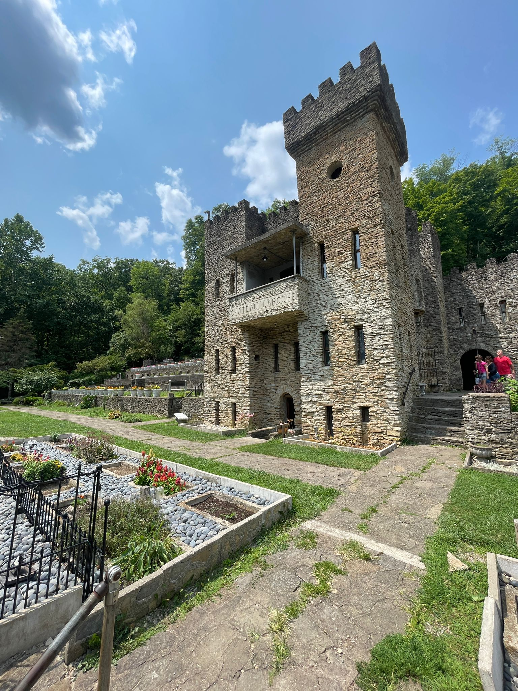

I am in my program because I need to excel my skills in technologies which are relevant to the digital world. Due to my work experience, I am more inclined towards knowing how business and technologies go hand in hand.
| Course Name | Days | Time |
|---|---|---|
| WEB DEVELOPMENT WITH .NET | MONDAY, WEDNESDAY | 01:25 PM - 03:25 PM |
| SYSTEM ANALYSIS AND DESIGN | MONDAY | 06:00 PM - 09:50 PM |
| DATA MODELING | TUESDAY, THURSDAY | 03:30 PM - 05:20 PM |
| CAREER MANAGEMENT | FRIDAY | 02:30 PM - 03:25 PM |
With my program plan, I plan to have below career paths:
I enjoy listening to the music. It helps me to de-stress a while and takes my mind off the daily routine. I mostly listen to Spotify. You can refer to my playlist.
I really like to go places, especialy related to history. Recently I visited Loveland Castle in Cincinnati Ohio.
I am a huge idio-box lover. I like to watch horror movies and series. Recent horror movie I watched was a hollywood movie named "Stree".